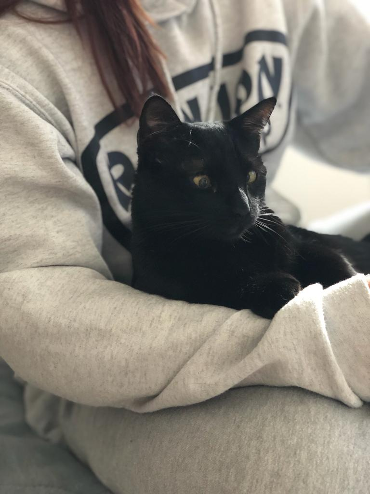
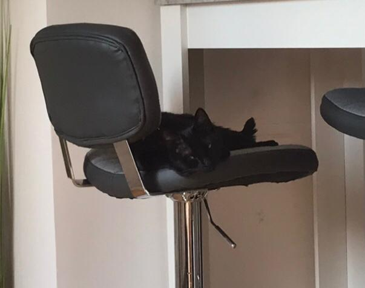

A little introduction
She is an adorable mini-kitten that loves to play and cuddle. She is already two years old but still learning about the world - and her name's Baby.
She is an adorable mini-kitten that loves to play and cuddle. She is already two years old but still learning about the world - and her name's Baby.
Baby loves playing with different types of toys, especially balls of yarn and toy mice. She can spend hours chasing them around the room!
| Type | Color |
|---|---|
| Yarn | Pink |
| Toy Mouse | Gray |
See More Pictures


The baby also loves cuddling with humans and getting lots of attention. She is very affectionate and loves to purr - even though she most certainly has her favorite human being and that's most definitely me, myself and I.